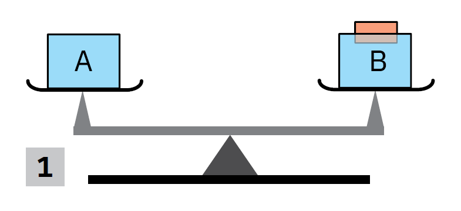
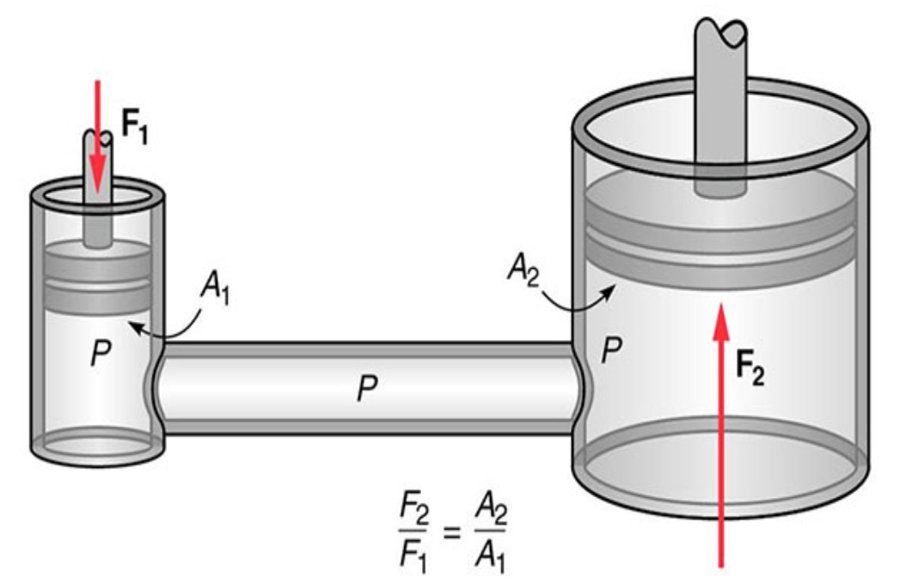

„Fizica nu este o materie dominată de formule, ci de logică.”
Pagina 1 / 10
Lecția 5 – Probleme rezolvate pas cu pas
Unitatea 5 · Statica fluidelor
Lecția 5 – Probleme rezolvate pas cu pas
Această lecție adună, în format interactiv, problemele de la finalul capitolului despre presiune, legea lui Pascal și legea lui Arhimede.
Ce găsești aici
probleme rezolvate pe pași mici;
formule scrise cu MathJax;
rezultate numerice clare;
explicații scurte, bune pentru telefon și tabletă;
o verificare rapidă la final.
Idei-cheie folosite
\(p = \frac{F}{S}\)
\(p_h = \rho g h\)
\(\frac{F_1}{S_1} = \frac{F_2}{S_2}\)
\(F_A = \rho g V\)
\(\rho = \frac{m}{V}\)
Cuprins rapid: balanța cu pahare, oul în saramură, presa hidraulică, balonul scufundat, cubul de lemn care plutește, aerostatul cu heliu, apă și ulei într-un vas cilindric, cub legat pe fundul bazinului.
Problema 1
Balanța cu două pahare
Situația: avem două pahare identice cu apă. În paharul B plutește o bucățică de lemn. Se cere ce se întâmplă după deblocarea balanței.

Balanța rămâne în echilibru deoarece lemnul plutitor dezlocuiește apă cu greutate egală cu greutatea lui.
Rezolvare pas cu pas
1Când lemnul plutește, el este susținut de o forță arhimedică egală cu greutatea sa.
\[F_A = G_{lemn}\]
2Asta înseamnă că lemnul deplasează o cantitate de apă care are aceeași greutate ca lemnul.
3Dacă paharul este plin până aproape de margine, apa dezlocuită poate ieși din pahar. Greutatea apei ieșite este egală cu greutatea lemnului.
4Prin urmare, masa totală de pe talerul B rămâne aceeași ca înainte.
Concluzie: masele sunt egale, iar balanța rămâne în echilibru.
Problema 2
Densitatea saramurii
Date: oul are masa \(m = 52{,}5\,\text{g}\) și volumul \(V = 50\,\text{cm}^3\). Din volum, 10% rămâne deasupra lichidului.
Oul plutește când forța arhimedică devine egală cu greutatea lui.
Pasul 1 – volumul scufundat
Dacă 10% este deasupra, atunci 90% este scufundat.
\[V_s = 0{,}9 \cdot 50 = 45\,\text{cm}^3\]
Pasul 2 – condiția de plutire
La plutire, forța arhimedică este egală cu greutatea oului.
\[\rho_s \cdot g \cdot V_s = m \cdot g\] \[\rho_s = \frac{m}{V_s}\]
Răspuns: densitatea saramurii este aproximativ \(\rho_s \approx 1{,}17\,\text{g/cm}^3\), adică aproximativ \(1167\,\text{kg/m}^3\).
Problema 3
Presa hidraulică
Date: asupra pistonului mare acționează \(F_2 = 2000\,\text{N}\). Pe pistonul mic se apasă cu \(F_1 = 100\,\text{N}\), iar acesta coboară \(h_1 = 2\,\text{cm}\).

Presa hidraulică mărește forța, dar pistonul mare se deplasează mai puțin.
Răspuns: raportul ariilor este \(\frac{S_2}{S_1}=20\), iar pistonul mare urcă \(h_2=0{,}1\,\text{cm}=1\,\text{mm}\).
Problema 4
Balonul umplut cu apă
Date: un balon subțire, cu masă neglijabilă, este umplut complet cu \(50\,\text{cm}^3\) de apă și scufundat în apă. Se cere indicația dinamometrului.
Balonul cu apă este în echilibru indiferent, deoarece greutatea apei din balon este compensată de forța arhimedică.
Ideea-cheie
Balonul conține apă și este introdus tot în apă. Volumul de apă din interior este egal cu volumul de apă dezlocuit în exterior.
\[F_A = \rho_{apă} g V\] \[G = \rho_{apă} g V\]
Observăm că cele două valori sunt egale:
\[F_A = G\]
Răspuns: dinamometrul indică \(0\,\text{N}\), deoarece balonul este în echilibru indiferent.
Problema 5
Cubul de lemn care plutește
Date: \(l = 36\,\text{cm}\), deasupra apei rămân \(a = 6\,\text{cm}\), aria bazei vasului este \(S = 400\,\text{cm}^2\), iar apa are densitatea \(\rho_0 = 1\,\text{g/cm}^3\).
Densitatea cubului se află din raportul dintre volumul scufundat și volumul total.
\[\Delta h = \frac{V_d}{S} = \frac{38880}{400} = 97{,}2\,\text{cm}\] \[\Delta h = 0{,}972\,\text{m}\]
Scăderea presiunii hidrostatice:
\[\Delta p = \rho g \Delta h = 1000 \cdot 10 \cdot 0{,}972 = 9720\,\text{Pa}\]
Răspuns: \(\rho_{cub} \approx 0{,}833\,\text{g/cm}^3\), iar presiunea hidrostatică pe fundul vasului scade cu \(9720\,\text{Pa}\).
Problema 6
Aerostatul cu heliu
Date: aerostatul trebuie să ridice masa totală \(M = 200\,\text{kg}\). Densitatea heliului este \(\rho_{He}=178{,}5\,\text{g/m}^3 = 0{,}1785\,\text{kg/m}^3\), iar densitatea aerului este \(\rho_{aer}=1{,}2928\,\text{kg/m}^3\).
Aerostatul se ridică atunci când forța arhimedică produsă de aer depășește greutatea totală.
a) Volumul minim al balonului
Forța arhimedică trebuie să echilibreze greutatea masei ridicate și greutatea heliului din balon.
\[\rho_{aer} g V = M g + \rho_{He} g V\] \[(\rho_{aer} - \rho_{He})V = M\] \[V = \frac{M}{\rho_{aer} - \rho_{He}}\]
Răspuns: volumul minim este aproximativ \(179{,}5\,\text{m}^3\), iar pe măsură ce balonul urcă, volumul crește.
Problema 7
Apă și ulei în același vas
Date: pentru apă, \(\rho_1 = 1\,\text{g/cm}^3 = 1000\,\text{kg/m}^3\), iar presiunea inițială pe fund este \(p = 1500\,\text{Pa}\). Se mai adaugă ulei cu \(\rho_2 = 0{,}8\,\text{g/cm}^3 = 800\,\text{kg/m}^3\), având același volum ca apa.
Date: cub de lemn cu \(\rho = 600\,\text{kg/m}^3\), latura \(l = 20\,\text{cm} = 0{,}2\,\text{m}\), apă sărată cu \(\rho_a = 1200\,\text{kg/m}^3\), iar pe fața superioară presiunea este \(p_1 = 5\,\text{kPa}\).
Pasul 1 – volumul cubului
\[V = l^3 = 0{,}2^3 = 0{,}008\,\text{m}^3\]
a) Forța arhimedică
\[F_A = \rho_a g V = 1200\cdot 10 \cdot 0{,}008 = 96\,\text{N}\]
b) Tensiunea din fir
Greutatea cubului este:
\[G = \rho g V = 600\cdot 10\cdot 0{,}008 = 48\,\text{N}\]
La echilibru:
\[F_A = G + T\] \[T = F_A - G = 96 - 48 = 48\,\text{N}\]
c) Diferența de presiune între fețele de sus și de jos
\[\Delta p = \rho_a g l = 1200\cdot 10 \cdot 0{,}2 = 2400\,\text{Pa}\]